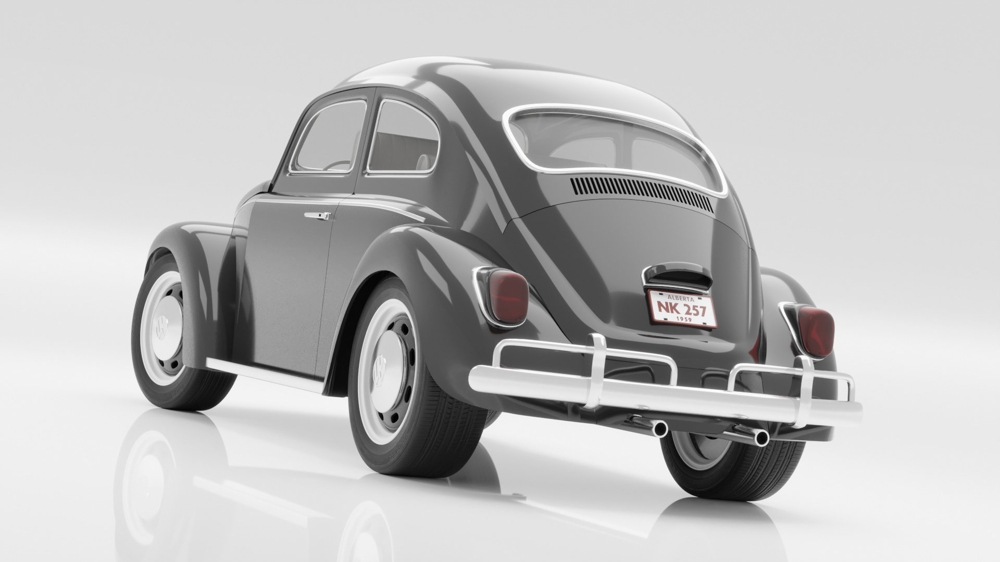
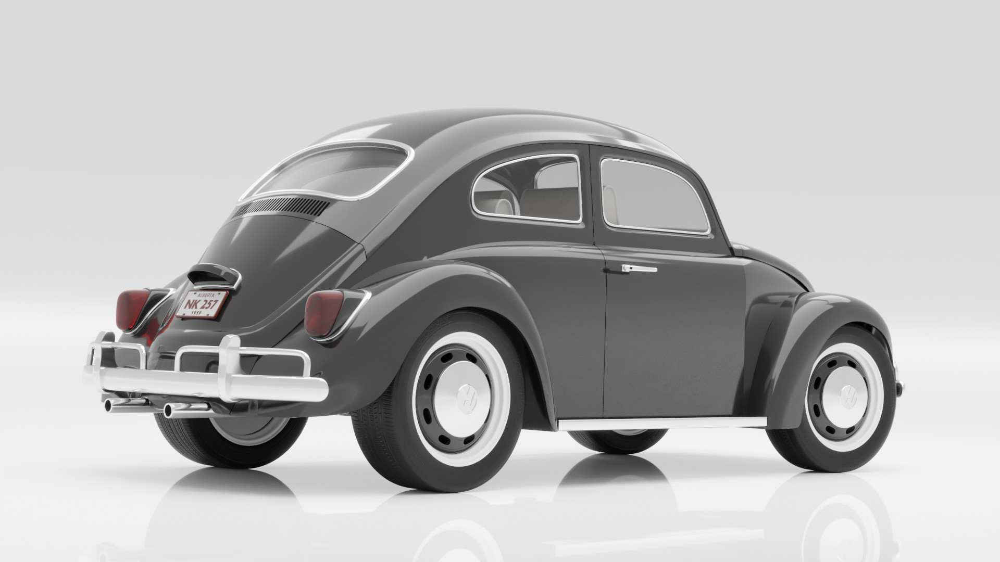

1959 Volkswagen Beetle
One of the first vehicle models I attempted to model was a 1959 VW Beetle. The topology was a mess and the presentation sloppy, but it helped me learn the basics of 3D modeling. As I was sifting through my old projects recently I came across it, and decided to give it a refresh with the experience I've gained since then. I re-modelled the body, bumpers, tires/wheels, and most of everything else too. I wasn't too concerned with making it perfect and challenged myself to work on it for a single day only.


